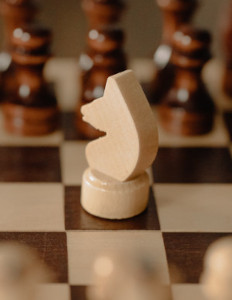
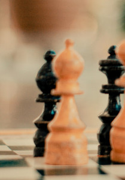
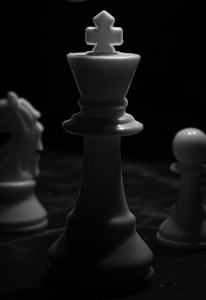
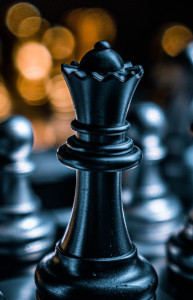

Cada um dos 6 diferentes tipos de peças se move de forma diferente. As peças não podem mover-se através de outras peças (embora o cavalo possa saltar sobre outras peças) e nunca podem avançar para uma casa que tenha uma das suas próprias peças. No entanto, elas podem ser movidas para tomar o lugar de uma peça do oponente que é então capturada.
As peças são geralmente movidas para:
- posições onde podem capturar outras peças (movendo até suas casas e depois as removendo
- defender suas próprias peças em caso de captura
- ou controlar casas importantes na partida.
Peão
Peões são incomuns porque eles se movem e capturam de formas diferentes. Eles andam para frente, mas só capturam na diagonal. Peões só podem se mover uma casa por vez, exceto em seus primeiros movimentos, quando podem andar por duas casas. Os peões só podem capturar nas casas diagonais em frente a eles. Nunca podem capturar para trás. Se houver uma peça imediatamente em frente ao peão, ele não pode se mover ou capturar aquela peça.
Torre
As torres podem se mover o quanto elas quiserem, mas somente para cima, para baixo e para os lados. As torres são peças particularmente fortes quando estão se protegendo e trabalhando juntas!
Cavalo

Os cavalos se movem de forma diferente das outras peças - andando duas casas em uma direção e então se movendo mais uma casa em um ângulo de 90 graus, ou no formato da letra "L". Cavalos são as únicas peças que podem se mover sobre outras peças.
Bispo

O bispo pode se mover o quanto quiser, mas somente nas diagonais. Cada bispo começa na casa de uma cor (clara ou escura) e deve sempre permanecer nesta cor. Bispos funcionam bem em conjunto pois um compensa a fraqueza do outro.
Rei

O rei é a peça mais importante, mas também uma das mais fracas. O rei só pode andar uma casa em qualquer direção - para frente, para trás, para os lados e em diagonal. O rei nunca pode se colocar em xeque (posição onde pode ser capturado). Quando o rei está sendo ameaçado por outra peça, isso é conhecido como "xeque".
Rainha (Dama)

A dama é a peça mais poderosa. Ela pode se mover em qualquer linha reta - para frente, para trás, para os lados ou em diagonal - contanto que não se mova através de nenhuma de suas próprias peças. E, assim como todas as outras peças, se a dama captura a peça do oponente o movimento termina. Note como a dama branca captura a dama preta, forçando o rei preto a se mover.